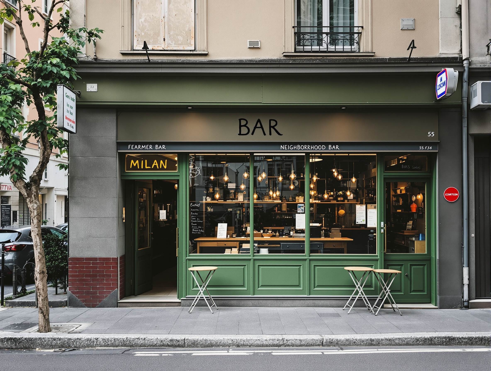
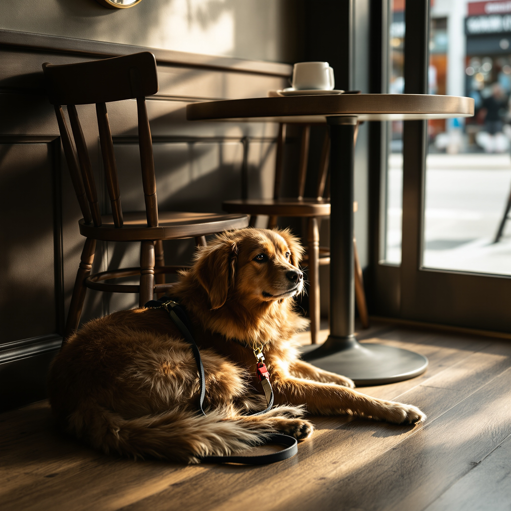
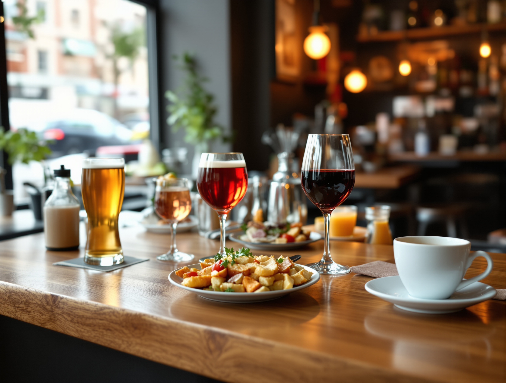

Via Emilio Lussu 6 · Milano
family
Da soli o in compagnia
Un bar di quartiere. Punto.
Ti fermi un’ora da solo, con una birra e un libro. O arrivi in gruppo, dopo il lavoro. Qui stai a casa in tutti e due i casi.

02 — Il quartiere
Su una via tranquilla, a Milano nord.
Siamo in Via Emilio Lussu, zona 20128. Un posto vero, non una catena: ci trovi la gente che abita e lavora qui intorno.
- Indirizzo
- Via Emilio Lussu 6, 20128 Milano (MI)
- Orari
- Lun–Sab 08:00–20:00 · Domenica chiuso
- Come arrivare
- Apri su Google Maps →
- Telefono
- +39 02 2630 9333
03 — Chi ci trova casa
Qui c’è posto per tutti.
Da soli o in gruppo, cane compreso. Senza prenotare per forza, senza spendere troppo. Ci si sente a casa in ogni caso.

Da soli, senza pensieri
Un’ora tutta per te, con una birra e un libro. Nessuno ti mette fretta.
In compagnia
Il gruppo del dopo-lavoro trova spazio. Tavoli semplici, niente prenotazione obbligatoria.
Cani ammessi, ingresso accessibile
Il cane viene con te. Ingresso e bagno sono accessibili in sedia a rotelle.
04 — Al banco
Cosa versiamo.
Niente di complicato. Le cose che vuoi bere in un bar di quartiere, servite come si deve.

Birra
Alla spina e in bottiglia, la base di ogni serata.
Cocktail
Per l’aperitivo o dopo cena, fatti al momento.
Vino
Un calice, rosso o bianco, senza troppi giri.
Superalcolici
Un amaro o un distillato per chiudere.
Caffè
Espresso al banco, a ogni ora del giorno.
Cibo al bar
Qualcosa da mangiare, per accompagnare.
Chiedi al banco cosa c’è oggi — il listino cambia e i gestori ti sanno dire.
05 — Le persone dietro il banco
Torni per chi c’è al banco.
Ti riconoscono dal secondo giro.
I gestori sono la ragione per cui la gente torna. Carini e disponibili, lo dicono le recensioni più di ogni altra cosa.
È ospitalità vera, non un servizio da catena. Ti salutano, si ricordano cosa bevi, ti fanno sentire a posto — da solo o in compagnia.
06 — Le parole dei clienti
Cosa raccontano di noi.
Quello che si ripete di più nelle recensioni, con parole nostre.
“Un’atmosfera simpatica e accogliente. Gestori carini e disponibili.”
Il tema che ricorre di più fra chi ci lascia una recensione.
“Un buon posto per divertirsi e stare in compagnia.”
Chi viene in gruppo lo ripete spesso.
Sintesi delle recensioni pubbliche del bar, senza nomi né voti inventati.
07 — Dettagli e contatto
Vieni al banco.
- Prenotazioni — accettiamo prenotazioni, ma puoi anche solo passare.
- Cani ammessi — il tuo cane è il benvenuto.
- Accessibilità — ingresso e bagno accessibili in sedia a rotelle.
- Pagamenti — carte di credito, debito e NFC.
- Giochi da bar — qualcosa con cui passare il tempo al banco.
Family Bar
Via Emilio Lussu 6
20128 Milano (MI)
Orari:
Lunedì – Sabato · 08:00 – 20:00
Domenica · chiuso
Chiama il +39 02 2630 9333